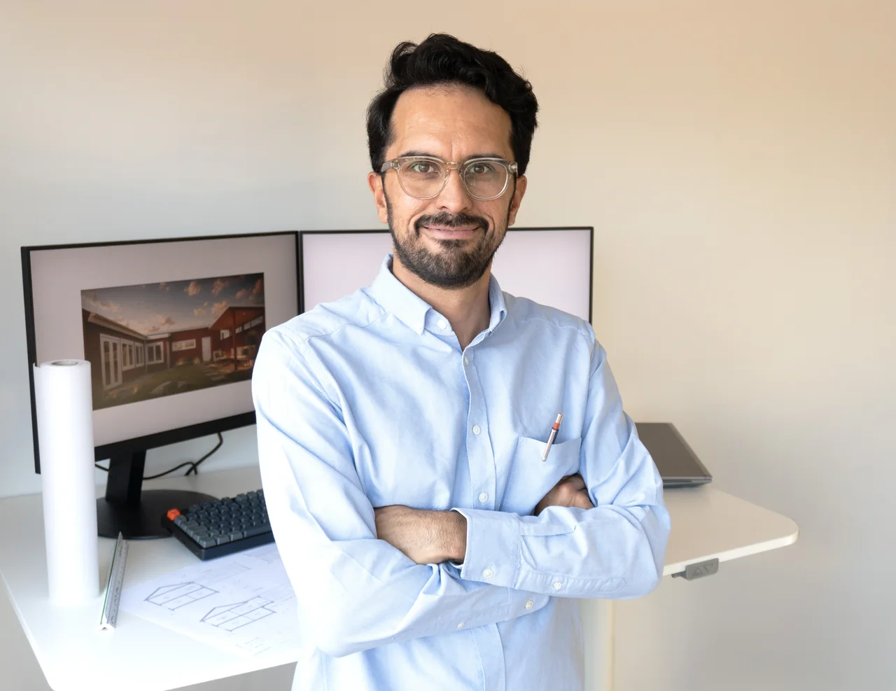
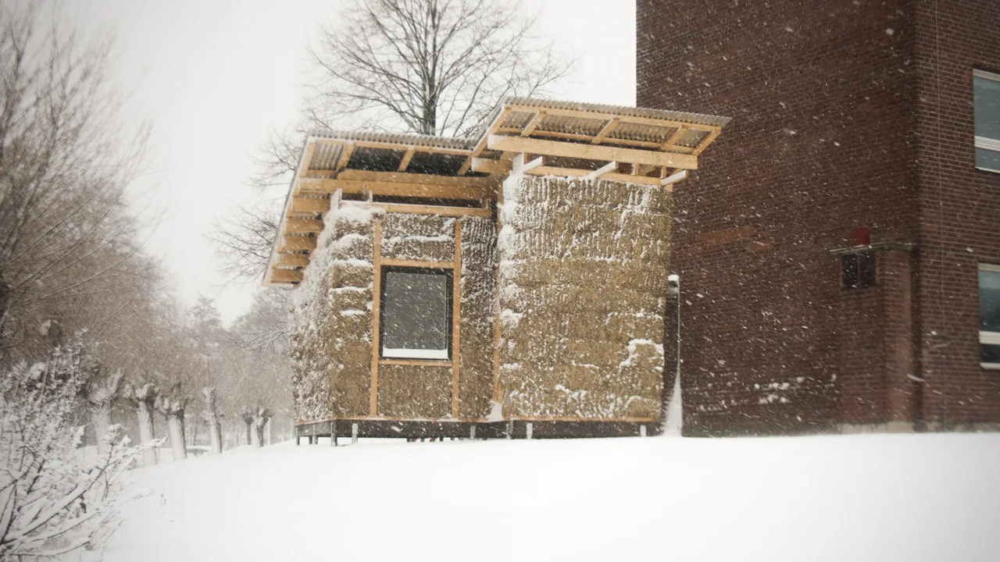

Utbildning
- Lunds universitet / LTH
- 2011–2016 · Arkitektexamen
- Universidade Federal do Rio de Janeiro
- 2014 · Utbytesstudier i arkitektur
- Kungliga Tekniska högskolan
- 2010–2011 · Arkitektutbildning
Arkitekt SAR/MSA · Grundare av Studio Paredes
Jag tror på en arkitektur som börjar i ett samtal — och blir bättre av att vi är nyfikna tillsammans.
Jag är utbildad i Lund och har över sex års erfarenhet från svenska arkitektkontor. Bakgrunden spänner över bostäder, skolor, omsorgsbyggnader, industri och infrastruktur.
Efter en uppväxt i Mexiko och andra länder landade jag i Sverige. I dag driver jag min egen studio i Malmö, med plats för både det stora sammanhanget och den lilla detaljen.

Porträtt från Studio Paredes.
Medlem i Sveriges Arkitekter. Konsultansvarsförsäkring hos Trygg-Hansa. Studio Paredes AB är registrerat för F-skatt och moms.

Halmhus #1 · Examensarbete i Lund, uppfört 2016 och demonterat 2018. Fotografi från Studio Paredes.
Ett hus att landa i. Ett extra rum. En idé som behöver en första skiss. Berätta vad du tänker, så börjar vi där.